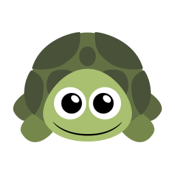

<!DOCTYPE html>
<html>

<head>
  <title>Best of Three Decision-making Game (Part 2)</title>

  <!-- Load libraries -->
  <script src="jspsych-6.3.1/jspsych.js"></script>

  <!-- Load task stimuli and settings -->
  <script src="js/BoT_copied_functions.js"></script>
  <script src="js/BoT_part2_settings.js"></script>
  <script src="js/BoT_part2_stimuli.js"></script>
  <script src="js/BoT_part2_instructions_text.js"></script>
  <script src="js/BoT_part2_timeline.js"></script>

  <!-- Load jsPsych plug-ins -->
  <script src="jspsych-6.3.1/plugins/jspsych-html-keyboard-response.js"></script>
  <script src="jspsych-6.3.1/plugins/jspsych-html-button-response.js"></script>
  <script src="jspsych-6.3.1/plugins/jspsych-preload.js"></script>
  <script src="jspsych-6.3.1/plugins/jspsych-image-keyboard-response.js"></script>
  <script src="jspsych-6.3.1/plugins/jspsych-audio-keyboard-response.js"></script>
  <script src="jspsych-6.3.1/plugins/jspsych-audio-button-response.js"></script>
  <script src="jspsych-6.3.1/plugins/jspsych-fullscreen.js"></script>

  <!-- Load custom plug-ins -->
  <script src="js/jspsych-memory-trial.js"></script>
  <script src="js/jspsych-choice-memory-trial.js"></script>
  <script src="js/jspsych-learning-instructions.js"></script>
  <script src="js/jspsych-comp-q.js"></script>

  <!-- Load CSS styles -->
  <link rel="stylesheet" href="https://cdnjs.cloudflare.com/ajax/libs/animate.css/4.1.1/animate.min.css" />
  <link rel="stylesheet" href="jspsych-6.3.1/css/jspsych.css">
  <link rel="stylesheet" href="css/BoT_p2.css">
  </link>

  <!-- Load pavlovia requirements -->
  <script src="lib/vendors/jquery-2.2.0.min.js"></script>
  <script src="lib/jspsych-pavlovia-3.0.0.js"></script>

  <!-- Get rid of pinterest -->
  <meta name="pinterest" content="nopin" />
  <meta name="pinterest" content="nohover" />
</head>

<body></body>
<script>

  /* create timeline */
  var timeline = [];

  /* DEFINE EACH TRIAL TYPE ----------------------------------- */
  /* init connection with pavlovia.org */
  var pavlovia_init = {
    type: "pavlovia",
    command: "init"
  };

  // end connection with pavlovia.org 
  var pavlovia_finish = {
    type: "pavlovia",
    command: "finish"
  };

  /* define full screen enter */
  var fullscreen_enter = {
    type: 'fullscreen',
    fullscreen_mode: true
  };

  /* preload */
  var preload_audio_test = {
    type: 'preload',
    audio: ["audio/beep_loop.wav", "audio/blank.wav", "audio/shark.wav", "audio/turtle.wav"],
    images: audio_test_images,
    message: "<p> Loading the games. </p> This make take a few minutes. </p> Thank you for your patience! </p>"
  }

  var preload_instructions = {
    type: 'preload',
    audio: audio_stim,
    images: [prac_stim, choice_options],
    message: "<p> Loading the games. </p> This make take a few minutes. </p> Thank you for your patience! </p>"
  }

  var preload_compq = {
    type: 'preload',
    audio: comp_quest_audio,
    message: "<p> Loading, please wait. </p>"
  }

  var preload_task = {
    type: 'preload',
    images: [real_stim, choice_options],
    message: "<p> Loading, please wait. </p>"
  }

  var preload_choice_mem = {
    type: 'preload',
    audio: choice_mem_audio,
    images: [choice_stim],
    message: "<p> Loading the games. </p> This make take a few minutes. </p> Thank you for your patience! </p>"
  }

  /* audio test */
  var beep_test = {
    type: 'audio-keyboard-response',
    stimulus: 'audio/beep_loop.wav',
    choices: jsPsych.ALL_KEYS,
    prompt: 'Make sure your sound is turned on. </p> Then, press the space bar to proceed to the audio test.',
  };

  var audio_test_1 = {
    type: 'audio-button-response',
    stimulus: 'audio/turtle.wav',
    choices: ['repeat', 'fish', 'tiger', 'turtle', 'shark'],
    correct_answer: 3,
    prompt: 'Click on the word that you just heard.',
    incorrect_prompt: 'Incorrect, please adjust your volume and try again.',
    margin_vertical: '40px',
    margin_horizontal: '10px',
    button_html: [
      '',
      '',
      '',
      '',
      ''
    ],
    post_trial_gap: 1000
  };


  var audio_test_2 = {
    type: 'audio-button-response',
    stimulus: 'audio/shark.wav',
    choices: ['repeat', 'turtle', 'shark', 'fish', 'tiger'],
    correct_answer: 2,
    prompt: 'Again, click on the word that you just heard.',
    incorrect_prompt: 'Incorrect, please adjust your volume and try again.',
    margin_vertical: '40px',
    margin_horizontal: '10px',
    button_html: [
      '',
      '',
      '',
      '',
      ''
    ],
    post_trial_gap: 1000
  };

  /* define welcome message trial */
  var welcome_block = {
    type: "html-keyboard-response",
    stimulus: "Welcome to the experiment. Press any key to begin and to advance the instructions."
  };

  /* define fixation */
  var fixation = {
    type: 'html-keyboard-response',
    stimulus: '<div style="font-size:60px;">+</div>',
    choices: jsPsych.NO_KEYS,
    trial_duration: iti_time,
    data: { task_part: 'fixation' }
  }

  /* define instructions trial */
  var memory_instructions = {
    type: "learning-instructions",
    stimulus: jsPsych.timelineVariable('stimulus'),
    audio_stim: jsPsych.timelineVariable('audio_stim'),
    choices: ['Next'],
    data: { task_part: 'instructions' },
    post_trial_gap: 100
  };

  /* define screen before practice */
  var practice_ready = {
    type: "html-button-response",
    stimulus: "<p> Ready to practice? </p>" +
      "<p> Remember, use the 1, 2, 3, and 4 keys to make your responses. </p>",
    choices: ['Start practice'],
    data: { task_part: 'instructions' },
    post_trial_gap: 100
  };

  /* define screen before real game */
  var real_game_ready = {
    type: "learning-instructions",
    stimulus: "<p> Great! You are now ready to begin the game. </p>" +
      "<p> Remember, use the 1, 2, 3, and 4 keys to make your responses. </p>",
    audio_stim: "audio/M10.wav",
    choices: ['Start game.'],
    data: { task_part: 'instructions' },
    post_trial_gap: 100
  };

  /* define screen before choice memory test */
  var choice_mem_ready = {
    type: "learning-instructions",
    stimulus: "<p> You are now ready to begin the game. </p>",
    audio_stim: "audio/choice_mem_ready.wav",
    choices: ['Start game.'],
    data: { task_part: 'instructions' },
    post_trial_gap: 100
  };

  /* define comprehension question */
  var comp_question = {
    type: "comp-q",
    audio_stim: jsPsych.timelineVariable('audio_stim'),
    stimulus: jsPsych.timelineVariable('stimulus'),
    choices: ['TRUE', 'FALSE'],
    data: { task_part: 'comp_question' },
    post_trial_gap: 100,
    on_finish: function (data) {
      if (data.button_pressed == jsPsych.timelineVariable('correct_button', true)) {
        data.correct = true;
      } else {
        data.correct = false;
      }
    }
  }

  /* define comprehension answer */
  var comp_answer = {
    type: "comp-q",
    stimulus: function () {
      var last_trial_correct = jsPsych.data.get().last(1).values()[0].correct;
      if (last_trial_correct) {
        return jsPsych.timelineVariable('right_response', true)
      } else {
        return jsPsych.timelineVariable('wrong_response', true)
      }
    },
    audio_stim: function () {
      var last_trial_correct = jsPsych.data.get().last(1).values()[0].correct;
      if (last_trial_correct) {
        return jsPsych.timelineVariable('right_audio', true)
      } else {
        return jsPsych.timelineVariable('wrong_audio', true)
      }
    },
    choices: ['Next'],
    data: { task_part: 'comp_answer' },
    post_trial_gap: 100
  };


  /* define memory trial */
  var memory_trial = {
    type: "memory-trial",
    stimulus: jsPsych.timelineVariable('stimulus'),
    data: jsPsych.timelineVariable('data'),
    stimulus_height: stimulus_height,
    choices: [key1, key2, key3, key4],
    response_ends_trial: true,
    trial_duration: max_choice_time,
    display_selection_time: selection_time,
    stimulus_height: stimulus_height,
    on_finish: function (data) {
      trial_count = trial_count + 1;
      console.log(trial_count);
    }
  }

  /* define choice memory trial */
  var choice_memory_trial = {
    type: "choice-memory-trial",
    stimulus: jsPsych.timelineVariable('stimulus'),
    choice_images: jsPsych.timelineVariable('choice_images'),
    data: jsPsych.timelineVariable('data'),
    stimulus_height: stimulus_height,
    choices: [key1, key2, key3],
    response_ends_trial: true,
    trial_duration: max_choice_time,
    display_selection_time: selection_time,
    stimulus_height: stimulus_height,
    on_finish: function (data) {
      choice_trial_count = choice_trial_count + 1;
    }
  }


  /* define experiment end screen */
  var experiment_end_screen = {
    type: "html-button-response",
    data: { task_part: 'end' },
    stimulus: "<p> Thank you for completing Part 2 of the experiment! </p>",
    choices: ['Click here to complete the experiment.']
  };

  /* define break screen */
  var break_screen = {
    type: "html-button-response",
    data: { task_part: 'break' },
    stimulus: "<p> Take a break! </p>" +
      "<p> Click the button to continue. </p>",
    choices: ['Click here to continue the game.']
  };


  // PROCEDURES // 

  /* instructions */
  var instructions_1 = {
    timeline: [memory_instructions],
    timeline_variables: instructions_text_1
  }

  /* practice procedure */
  var practice = {
    timeline: [fixation, memory_trial],
    timeline_variables: practice_stim,
    randomize_order: true
  }

  /* comprehension questions */
  var comp_questions = {
    timeline: [comp_question, comp_answer],
    timeline_variables: comp_questions
  }

  /* instructions 2 */
  var instructions_2 = {
    timeline: [memory_instructions],
    timeline_variables: instructions_text_2
  }

  /* determine if there should be a break */
  var if_break = {
    timeline: [break_screen],
    conditional_function: function () {
      if (trial_count % num_before_break == 0) {
        return true;
      } else {
        return false;
      }
    }
  };


  /* memory procedure */
  var memory_procedure = {
    timeline: [fixation, memory_trial, if_break],
    timeline_variables: memory_stim,
    randomize_order: true
  }

  /* choice memory instructions */

  /* choice memory procedure */

  // animals
  var animals_instructions = {
    timeline: [memory_instructions],
    timeline_variables: animals_choice_text
  }

  var animals_choice_mem = {
    timeline: [fixation, choice_memory_trial],
    timeline_variables: animals_choice_mem_stim,
    randomize_order: true
  }

  var full_animals_choice_mem = {
    timeline: [animals_instructions, choice_mem_ready, animals_choice_mem]
  }

  // fruit
  var fruit_instructions = {
    timeline: [memory_instructions],
    timeline_variables: fruit_choice_text
  }

  var fruit_choice_mem = {
    timeline: [fixation, choice_memory_trial],
    timeline_variables: fruit_choice_mem_stim,
    randomize_order: true
  }

  var full_fruit_choice_mem = {
    timeline: [fruit_instructions, choice_mem_ready, fruit_choice_mem]
  }


  // furniture
  var furniture_instructions = {
    timeline: [memory_instructions],
    timeline_variables: furniture_choice_text
  }

  var furniture_choice_mem = {
    timeline: [fixation, choice_memory_trial],
    timeline_variables: furniture_choice_mem_stim,
    randomize_order: true
  }

  var full_furniture_choice_mem = {
    timeline: [furniture_instructions, choice_mem_ready, furniture_choice_mem]
  }

  // pets
  var pets_instructions = {
    timeline: [memory_instructions],
    timeline_variables: pets_choice_text
  }

  var pets_choice_mem = {
    timeline: [fixation, choice_memory_trial],
    timeline_variables: pets_choice_mem_stim,
    randomize_order: true
  }

  var full_pets_choice_mem = {
    timeline: [pets_instructions, choice_mem_ready, pets_choice_mem]
  }

  // plants
  var plants_instructions = {
    timeline: [memory_instructions],
    timeline_variables: plants_choice_text
  }

  var plants_choice_mem = {
    timeline: [fixation, choice_memory_trial],
    timeline_variables: plants_choice_mem_stim,
    randomize_order: true
  }

  var full_plants_choice_mem = {
    timeline: [plants_instructions, choice_mem_ready, plants_choice_mem]
  }

  // vehicles
  var vehicles_instructions = {
    timeline: [memory_instructions],
    timeline_variables: vehicles_choice_text
  }

  var vehicles_choice_mem = {
    timeline: [fixation, choice_memory_trial],
    timeline_variables: vehicles_choice_mem_stim,
    randomize_order: true
  }

  var full_vehicles_choice_mem = {
    timeline: [vehicles_instructions, choice_mem_ready, vehicles_choice_mem]
  }


  // randomize block order and create procedure
  var shuffled_choice_mem = jsPsych.randomization.repeat([full_animals_choice_mem, full_fruit_choice_mem, full_furniture_choice_mem,
    full_pets_choice_mem, full_plants_choice_mem, full_vehicles_choice_mem], 1);

  var choice_mem_procedure = {
    timeline: shuffled_choice_mem
  }

  ////////////////////////////////////////////
  // CREATE TIMELINE AND RUN EXPERIMENT //
  ////////////////////////////////////////////

  // initialize 
  timeline.push(pavlovia_init);
  timeline.push(fullscreen_enter)

  // audio test
  timeline.push(preload_audio_test);
  timeline.push(beep_test);
  timeline.push(audio_test_1);
  timeline.push(audio_test_2);

  // instructions
  timeline.push(preload_instructions);
  timeline.push(instructions_1);
  timeline.push(practice_ready);

  // practice
  timeline.push(practice);
  timeline.push(instructions_2);

  // comprehension questions
  timeline.push(preload_compq);
  timeline.push(comp_questions);
  timeline.push(real_game_ready);

  // real memory test
  timeline.push(preload_task);
  timeline.push(memory_procedure);

  // choice memory test
  timeline.push(preload_choice_mem);
  timeline.push(choice_mem_procedure);

  // end
  timeline.push(pavlovia_finish);
  timeline.push(experiment_end_screen);

  /** GET SUB ID BASED ON URL **/
  var urlvar = jsPsych.data.urlVariables();
  var file_name = 'mem_spec_p2_' + urlvar.subject_ID + '_' + getFormattedTime();

  /* generate qualtrics link. Note: this has been modified in the shared code to just go to our lab website */ 
  var final_qualtrics = 'https://hartleylab.org';

  /* start and end the experiment */
  jsPsych.init({
    timeline: timeline,
    on_trial_start: function (data) {
      jsPsych.data.get().addToAll({ subject_id: urlvar.subject_ID })
      jsPsych.data.get().addToAll({ task_version: 2 })
      var interaction_data = jsPsych.data.getInteractionData();
      var blur_events = interaction_data.filter({ event: 'blur' });
      var focus_events = interaction_data.filter({ event: 'focus' });
      var fullscreenenter_events = interaction_data.filter({ event: 'fullscreenenter' });
      var fullscreenexit_events = interaction_data.filter({ event: 'fullscreenexit' });
      jsPsych.data.get().addToLast({ interactions: interaction_data.csv() });
      jsPsych.data.get().addToLast({ blur_events: blur_events.csv() });
      jsPsych.data.get().addToLast({ focus_events: focus_events.csv() });
      jsPsych.data.get().addToLast({ fullscreenenter_events: fullscreenenter_events.csv() });
      jsPsych.data.get().addToLast({ fullscreenexit_events: fullscreenexit_events.csv() });
    },
    on_interaction_data_update: function (data) {
      var interaction_data = jsPsych.data.getInteractionData();
      var blur_events = interaction_data.filter({ event: 'blur' });
      var focus_events = interaction_data.filter({ event: 'focus' });
      var fullscreenenter_events = interaction_data.filter({ event: 'fullscreenenter' });
      var fullscreenexit_events = interaction_data.filter({ event: 'fullscreenexit' });
      jsPsych.data.get().addToLast({ interactions: interaction_data.csv() });
      jsPsych.data.get().addToLast({ blur_events: blur_events.csv() });
      jsPsych.data.get().addToLast({ focus_events: focus_events.csv() });
      jsPsych.data.get().addToLast({ fullscreenenter_events: fullscreenenter_events.csv() });
      jsPsych.data.get().addToLast({ fullscreenexit_events: fullscreenexit_events.csv() });
    },
    on_finish: function () {
      document.body.innerHTML = '<p> <center> Please wait while your data saves. You will be redirected in 10 seconds.  </center> </p>'
      setTimeout(function () { location.href = final_qualtrics }, 10000)
    }
  });
</script>

</html>